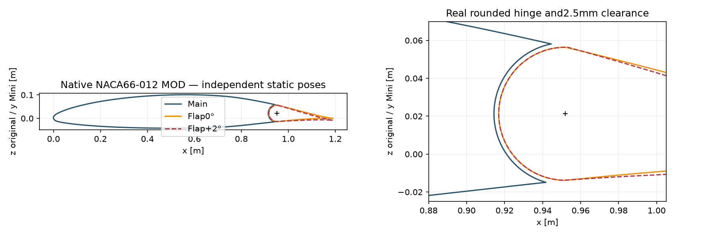

Główny model zachowuje2.5mm szczelinę; sealed jest odrębnym demonstratorem. Wszystkie wartości sił poniżej są diagnostyczne; brak zaakceptowanej pary0°/+2°.
| Przypadek | Komórki | Iteracje | Czas solvera | Status |
|---|---|---|---|---|
| gap_delta_0 | 89750 | 1 | 2.980074 | HOLD_PHYSICAL |
| gap_delta_0_gentle_start | 89750 | 1 | 2.4922302 | HOLD_PHYSICAL |
| gap_delta_2 | 90198 | 0 | — | BUILT_NOT_RUN |
| sealed_demo_delta_0 | 14776 | 900 | 63.1693086 | HOLD_LIMIT |
Sealed0°: średnieostatnich25 iteracji CL0.3233191,CD0.00540279,Mh−561.0577Nm na1m rozpiętości. Nie zastępuje wyniku ze szczeliną. +2° nie uruchomiono po niezaliczonym0°.
Następny krok: spójna inicjalizacja prędkości/ciśnienia w szczelinie na tej samej siatce; bez dalszych MPIbenchmarków i bez rozszerzania kątów.

{
"at": "2026-11-03T15:53:10.496904+01:00",
"mini_built": true,
"decision": "GO_ARCHITECTURE; HOLD_GAP_HYDRODYNAMICS",
"main_blocker": "Unphysical initial pressure in hinge gap; gentle URF0.3/0.05 did not resolve; no further angle solve",
"cost_comparison": "Real gap89.75k/90.198k cells vs sealed14.776k; main has only cold startup-step timings, not a converged-cost measurement. Sealed900iterations in63.1693s solver; no equivalent physics claim.",
"next_scientific_step": "Test physically consistent near-gap initialization on the unchanged mesh before+2; first locate globalpmin and compare Cp/velocity in cavity. Candidate quiescent cavity with smooth outer velocity or potential-flow initialization. Not executed. Full residual reference-window definition also needs review; no threshold changes.",
"simulation_results": [
{
"case": "gap_delta_0",
"fidelity": "L1_GAP",
"cells": 89750,
"gap_mm": 2.5,
"status": {
"status": "HOLD_PHYSICAL",
"iterations_this_run": 1,
"elapsed_s": 2.980074,
"validation": false,
"DRL_allowed": false
},
"measured_iterations": 1,
"validation_accepted": false,
"training_eligible": false,
"solver_mean_s_per_iteration": 0.3684991,
"runtime_window": "single cold iteration; not representative benchmark",
"pABSmin_Pa": -1799624.1811583072,
"last25_means": {
"CL": 0.19844114926886247,
"CD": -1.4337031832406792,
"Mh": -3404.3504273490685
},
"last_native_iteration": "3",
"W04_max_slowdown_percent": 0.0,
"W04_baseline": {
"at": 1793716718.6551712,
"step": 7629,
"median_s": 1.6589067000004434
},
"full_run_elapsed_s": 111.09908747673035,
"MINI_prepared.sim": {
"path": "F:\\ntnu\\flap_control\\exploration_lab\\MINI_POC_2D_20261103\\gap_delta_0\\MINI_prepared.sim",
"bytes": 5615030,
"sha256": "6178cb0c101a0b8292b9b11da94d5a0f3bbcf2250d8012cb09ec94fcaca730f6"
},
"MINI_result.sim": {
"path": "F:\\ntnu\\flap_control\\exploration_lab\\MINI_POC_2D_20261103\\gap_delta_0\\MINI_result.sim",
"bytes": 20334663,
"sha256": "a7d576103ec03169e29448e19ab892d316e4c3f2b7df76c87eebecdfd9c69f59"
}
},
{
"case": "gap_delta_0_gentle_start",
"fidelity": "L1_GAP",
"cells": 89750,
"gap_mm": 2.5,
"status": {
"status": "HOLD_PHYSICAL",
"iterations_this_run": 1,
"elapsed_s": 2.4922302,
"validation": false,
"DRL_allowed": false
},
"measured_iterations": 1,
"validation_accepted": false,
"training_eligible": false,
"solver_mean_s_per_iteration": 0.2657398,
"runtime_window": "single cold iteration; not representative benchmark",
"pABSmin_Pa": -4322943.101565355,
"last25_means": {
"CL": 0.034214608137601056,
"CD": 0.48482873469362814,
"Mh": -2930.017753182507
},
"last_native_iteration": "1",
"W04_max_slowdown_percent": 0.6926399210102296,
"W04_baseline": {
"at": 1793716981.9093044,
"step": 7789,
"median_s": 1.6100934500000221
},
"full_run_elapsed_s": 112.20054650306702,
"MINI_prepared.sim": {
"path": "F:\\ntnu\\flap_control\\exploration_lab\\MINI_POC_2D_20261103\\gap_delta_0_gentle_start\\MINI_prepared.sim",
"bytes": 5615030,
"sha256": "6178cb0c101a0b8292b9b11da94d5a0f3bbcf2250d8012cb09ec94fcaca730f6"
},
"MINI_result.sim": {
"path": "F:\\ntnu\\flap_control\\exploration_lab\\MINI_POC_2D_20261103\\gap_delta_0_gentle_start\\MINI_result.sim",
"bytes": 20283834,
"sha256": "29aefa37e4f00806b909e36e0b7c8ad277f4c4f76c74198fa4af814c3645eaec"
}
},
{
"case": "gap_delta_2",
"fidelity": "L1_GAP",
"cells": 90198,
"gap_mm": 2.5,
"status": {
"status": "BUILT_NOT_RUN"
},
"measured_iterations": 0,
"validation_accepted": false,
"training_eligible": false,
"MINI_prepared.sim": {
"path": "F:\\ntnu\\flap_control\\exploration_lab\\MINI_POC_2D_20261103\\gap_delta_2\\MINI_prepared.sim",
"bytes": 5633846,
"sha256": "3a92b5356b609218465d5de8d4822ec3dcf30f1399cef8578d009a4940f33d36"
}
},
{
"case": "sealed_demo_delta_0",
"fidelity": "L1_SEALED_ALGORITHM_DEMONSTRATOR",
"cells": 14776,
"gap_mm": 0,
"status": {
"status": "HOLD_LIMIT",
"iterations_this_run": 900,
"elapsed_s": 63.1693086,
"validation": false,
"DRL_allowed": false
},
"measured_iterations": 900,
"validation_accepted": false,
"training_eligible": false,
"solver_mean_s_per_iteration": 0.04159562876404494,
"runtime_window": "after10 warmup iterations",
"pABSmin_Pa": 26892.71426325821,
"last25_means": {
"CL": 0.32331911653609774,
"CD": 0.005402793371022261,
"Mh": -561.05768152643
},
"last_native_iteration": "900",
"force_windows": {
"CL": {
"drift_percent": 0.31856968806628944,
"range_percent": 0.3226187260218081
},
"CD": {
"drift_percent": 0.4900093594059536,
"range_percent": 0.5390887549167812
},
"Mh": {
"drift_percent": 0.39373433762758686,
"range_percent": 0.2767772058007108
}
},
"residual_evidence": {
"residual_Continuity": {
"first": 1.0,
"last": 0.007124485852777424,
"ratio": 0.007124485852777424,
"pass_ratio_001": true
},
"residual_Sdr": {
"first": 0.038882116575810095,
"last": 0.00028410694850164946,
"ratio": 0.007306879705165078,
"pass_ratio_001": true
},
"residual_Tke": {
"first": 0.9999999999999999,
"last": 0.00016018310456080603,
"ratio": 0.00016018310456080605,
"pass_ratio_001": true
},
"residual_X_momentum": {
"first": 0.016787146038353237,
"last": 0.0035941562122876274,
"ratio": 0.21410168256570444,
"pass_ratio_001": false
},
"residual_Y_momentum": {
"first": 0.0019102543321696454,
"last": 0.002682801962737591,
"ratio": 1.4044213472299756,
"pass_ratio_001": false
}
},
"residual_note": "Normalized residuals are all<0.01 at900, but actual unchanged macro criterion last/first<=0.01 fails X andY due small initial seeds. Do not relabel recorded HOLD asPASS or silently change the reference window.",
"W04_max_slowdown_percent": 2.2465445228162517,
"W04_baseline": {
"at": 1793717184.7592764,
"step": 7913,
"median_s": 1.6335443000007217
},
"full_run_elapsed_s": 178.89626502990723,
"MINI_prepared.sim": {
"path": "F:\\ntnu\\flap_control\\exploration_lab\\MINI_POC_2D_20261103\\sealed_demo_delta_0\\MINI_prepared.sim",
"bytes": 1750385,
"sha256": "e32f08a5e9c447b09e745b6c1b596d9a3ec3a0f6ba75cc12cc10ce88a9e8c702"
},
"MINI_result.sim": {
"path": "F:\\ntnu\\flap_control\\exploration_lab\\MINI_POC_2D_20261103\\sealed_demo_delta_0\\MINI_result.sim",
"bytes": 4412175,
"sha256": "db975909033e369470615db5be80dd3c874917234888e21b1b5af0768874a49c"
}
}
],
"protected_high_fidelity": "t1.212 SHA unchanged; old failures archived; speed/MPI benchmarks stopped",
"W04": "unchanged; all Mini monitor samples below15% slowdown",
"larger_angles": "Static[-5,-2,0,+2,+5] staged;dynamic±2/±5 later;±5 DRLblocked",
"night": "Existing validation queue stays HOLD; no automatic night starts"
}